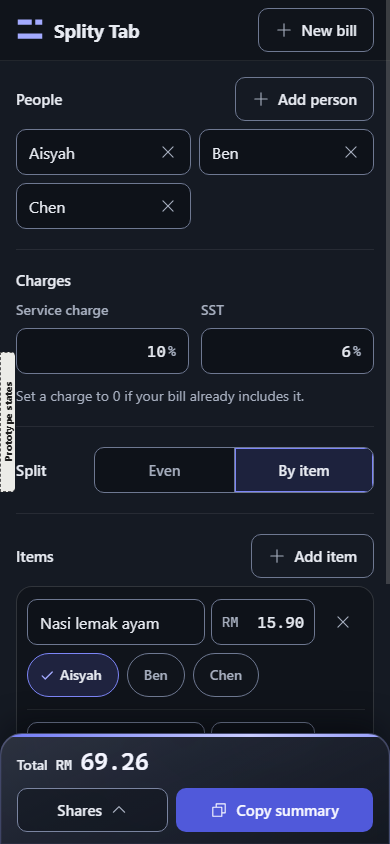
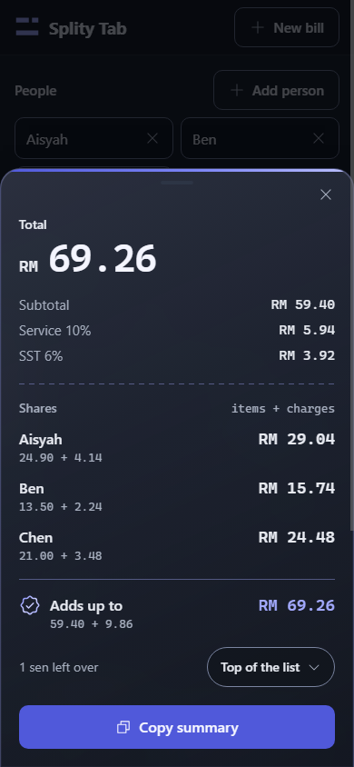
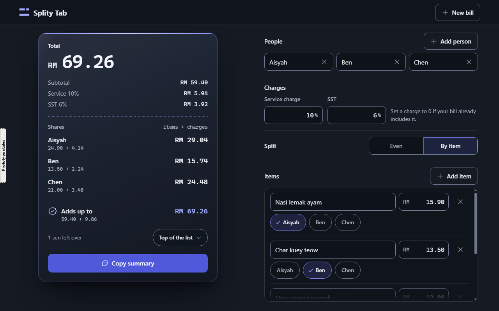

Updated 11 October, 00:50. You accepted G. G2 is G with your phone note built in. People and Charges now fold into one row each on a phone, so Items gets the room, and "Shares" now reads "Splits". The desktop is unchanged. The rest of this page is as it was, with G2 added on top.
G is B Glass Receipt's layout and its one glass card, in A Night Console's slate and indigo, with no glow. It follows your correction at 22:50. The first round 2 page, F, was built on D by my misread, so it is withdrawn and not shown here (the file stays as a record). Round 1 B and A sit beside G so you can see what came from each. Every frame below is the real prototype, so you can type, tap who had an item, open Shares on the phone, and use Prototype states in the left edge for the other states. The desktop view is further down.
G2, my pick now
On a 390 px phone the first item field moves up from 599 px to 335 px, and the Subtotal field from 564 px to 300 px. Three whole items show above the bottom bar where G showed one. Each folded row shows what is inside, "Aisyah, Ben, Chen" and "Service 10%, SST 6%", so you can check them without opening. Changing a name or a rate now takes one extra tap.
If G2 is right, the next steps are lock the design system with its contrast ratios, compose every screen and state, wire the flow, then the golden files the build is checked against. The logo is redrawn with the name "Splity Tab" after that.
What needs your word on G2
1. G2 as the final direction. Accept it, or give more notes.
2. A saved bill that could not be read (S6) starts a fresh bill, like a first open. On a first open People starts open because the names are still "Person 1" and "Person 2". The designer left S6 folded as my brief said, and asks whether S6 should open People too. I recommend yes.
3. The G2 readings, the first rows of the readings table further down.
G2 on a phone, the new one
The first frame is G2. If a frame looks unchanged, reload the page (Ctrl+F5). G2 only changes the phone layout, so g2.html opened in a wide window looks like G.
Round 2, revised, my pick
G2 Glass Console, revised
People and Charges fold into one row each. Items starts near the top. "Splits" on the bottom bar.
Try
Tap the People or Charges row to open it, change a name and fold it again. Splits at the bottom opens the receipt. Prototype states has "S2 Rate error" to see a folded row holding an error.
G does all five of your points and both clarifications. The phone now opens on the inputs, with the first field at 130 px from the top where B had it at 775 px. The receipt is one tap away in a strip pinned to the bottom that always shows the Total. On a desktop the page never scrolls, even with 12 people or a ten-item bill, because only the item list scrolls inside its own frame.
If you accept it, the next steps are lock the design system with its contrast ratios, compose every screen and state, wire the flow, then the golden files the build is checked against. The logo is redrawn with the name "Splity Tab" after that.
What G asked of you, answered
1. G as the direction. Answered 00:01, "For Splity, i like it", with the phone note that became G2.
2. "1 sen left over" on the phone. Answered 00:03. It stays inside the sheet as built ("That looks good already"), and "Shares" became "Splits".
3. The readings below. Where your words left a detail open, I or the designer chose. Each is easy to change. The highlighted rows are the ones most likely to matter to you.
At a glance
Round 1 B, phone

G, phone

G, Shares sheet

G, desktop
What changed, point by point
Your point
Round 1 B
G now
Where to see it
"For people and charges, it should be collapsed from a section"
Always open on a phone
G2 folds each into one row with a summary. Tap to open. Items, the Split switch and the Subtotal never fold. Desktop unchanged
G2, phone view
"i dont like this, change this to Splits"
"Shares" on the bar, the sheet and the receipt
G2 reads "Splits" in all of them, and in "Enter the subtotal to see the splits." The Split switch heading stays "Split"
G2, the bottom bar
"color night console but use glass receipt"
Deep navy with cyan, one glass card
B's layout and its one glass card, in A's slate layers and indigo. The card is slate glass with an indigo hairline edge
Everywhere
"remove neon backgrounds", only the glow behind the receipt
Light pools behind the card
No light pools and no page gradient. The glass card stays
Desktop view
Copy summary keeps a solid fill, in indigo
A cyan fill
A solid indigo fill with near-white text, 5.24 to 1
The card on a desktop, the strip on a phone
"Move charges above Split"
People, Split, Items, then Charges
People, Charges, Split, Items on every width
The input column
"By items... scrolled within a div"
The desktop page was 1,262 px tall at 1280 x 800 and scrolled
The page is exactly 800 px tall in every state. The item list scrolls inside its own frame, with a fade where there is more
Prototype states, W2 Long bill or S7 12 people
"make the receipt collapsed... Make it easier to input stuff"
The receipt came first, so the first field was 775 px down an 844 px screen
The inputs come first, the first field at 130 px. A strip pinned to the bottom shows the Total, Shares and Copy summary. Shares lifts the whole receipt card up as a sheet
Phone view, Shares
"i love the sen left over"
"1 sen left over" with its Top of the list chip
Kept exactly, on the receipt's spare sen line
The card, or Shares on a phone
Readings made for you
The first column says who chose. ORCH is me, from your words. DESIGNER is the designer agent, where the brief left it open. YOU is your own answer.
Who
Reading
Why
ORCH
G2. The folding is for the phone only. The desktop is exactly G
You named the phone, and the desktop already fits 1280 x 800 with nothing to scroll
ORCH
G2. Both rows start folded. On a new bill People starts open. A row with an error opens itself, and a folded one shows "Check service charge" in red
An error is never hidden, and naming people is the first step of a new bill
ORCH
G2. "Splits" replaces "Shares" on every width, not only the phone button
So the button and what it opens say the same word
DESIGNER
G2. G had no message for a wrong rate, so G2 adds the 1.0 copy under the field, "Enter a rate from 0 to 30" (Service) and "Enter a rate from 0 to 20" (SST)
A folded Charges needs an error to show. The wording is 1.0's
DESIGNER
G2. The summary hides while its row is open, since the fields show the same thing right below
Keeps the open row calm
DESIGNER
G2. With 12 people the summary reads "Aisyah, Ben, Chen, Person 4 and 8 more" (390 px) or "Aisyah, Ben, Chen and 9 more" (360 px)
Names say who is in, "and N more" gives the count
DESIGNER
G2. On a phone Add person sits under the names inside People. The gaps between the folded rows and Split are a little tighter
The rows read as one short list above Items
ORCH
On a phone the receipt collapses into a strip pinned to the bottom (Total, Shares, Copy summary), and Shares opens it as a sheet
Your words offered "collapsed", "button press" or "tab change". A pinned strip keeps the Total in sight while you type, which a tab would hide
YOU
On a phone "1 sen left over" stays inside the sheet, now named Splits
Your answer at 00:03, "That looks good already"
DESIGNER
The soft light under the Total and the glow on the Total figure are gone too, inside the card
They read as glow. The Total is lit by size and colour alone. A faint glow on the figure only could come back if you miss it
ORCH
"Split" read as B's own Split section, the Even and By item switch
So Charges sits between People and the switch
ORCH
No "+1 sen" label beside a share
That label was D's, not B's. B shows the spare sen once, on its own line
DESIGNER
The strip is the receipt card collapsed, in the same glass. Only one glass surface is ever on screen
Keeps the one material B was built on
DESIGNER
B's rainbow foil strip and seal are one indigo sheen
A has one accent colour
DESIGNER
Add person and Add item sit in their section's heading row. Split is one row, heading left and switch right. On a desktop the charge hint sits beside the two fields
Saves height, so 12 people and the item frame still fit 1280 x 800, and Add item stays in reach while the list scrolls
DESIGNER
At 1280 x 800 the item frame shows about two and a half items before it scrolls
The cost of a page that never scrolls
DESIGNER
Start new bill uses A's red fill
It deletes the bill, so it gets the danger colour. B used its main fill
DESIGNER
Tablet widths, 600 to 1023 px, use the phone layout with the sheet centred
Two columns do not fit well below 1024 px
Phone, 390 px
Round 1, your pick for the base
B Glass Receipt
The receipt as one floating glass card with the total softly lit, on deep navy.
G2 passed the designer's 501 of 501 render checks and my own separate spot check at 1280, 390 and 360 px. Every desktop block sits where G had it, the page never scrolls at 1280 x 800, there is no sideways scroll at 360 with any row open, the rows open and close by tap, Enter and Space, summaries follow edits, the word "Shares" appears nowhere a person reads, "1 sen left over" is still in the Splits sheet, the splits add up to RM 69.26, there are no console errors or network requests, and Copy summary only reached a stand-in clipboard.
G passed the designer's render checks with no failures at 1280, 1024, 768, 390 and 360 px, and my own separate spot check at 1280, 390 and 360. No console errors, no network requests, no page scroll at 1280 x 800 in K1, K2, 12 people or the ten-item bill, no sideways scroll at 360, and the shares add up to the Total in whole sen. Copy summary only reached a stand-in clipboard. The one thing my check caught is the phone "1 sen left over" placement, asked of you above. Screenshots are in checks/g.